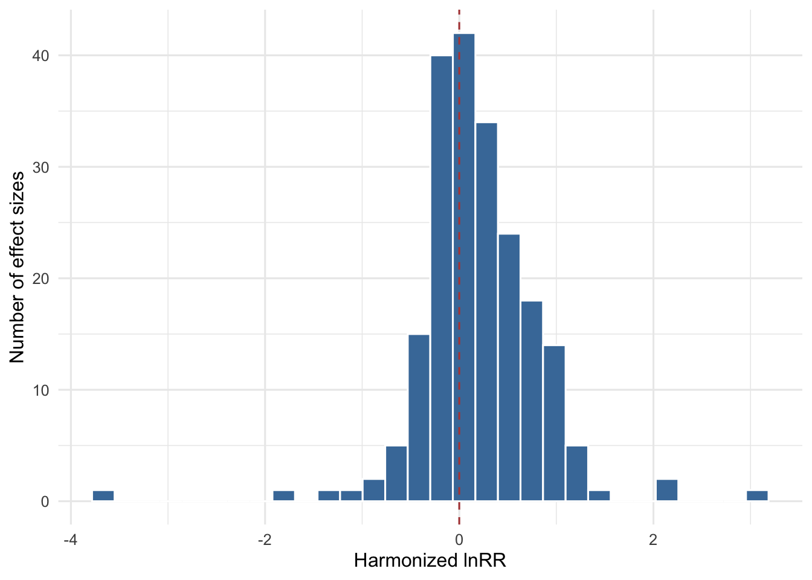
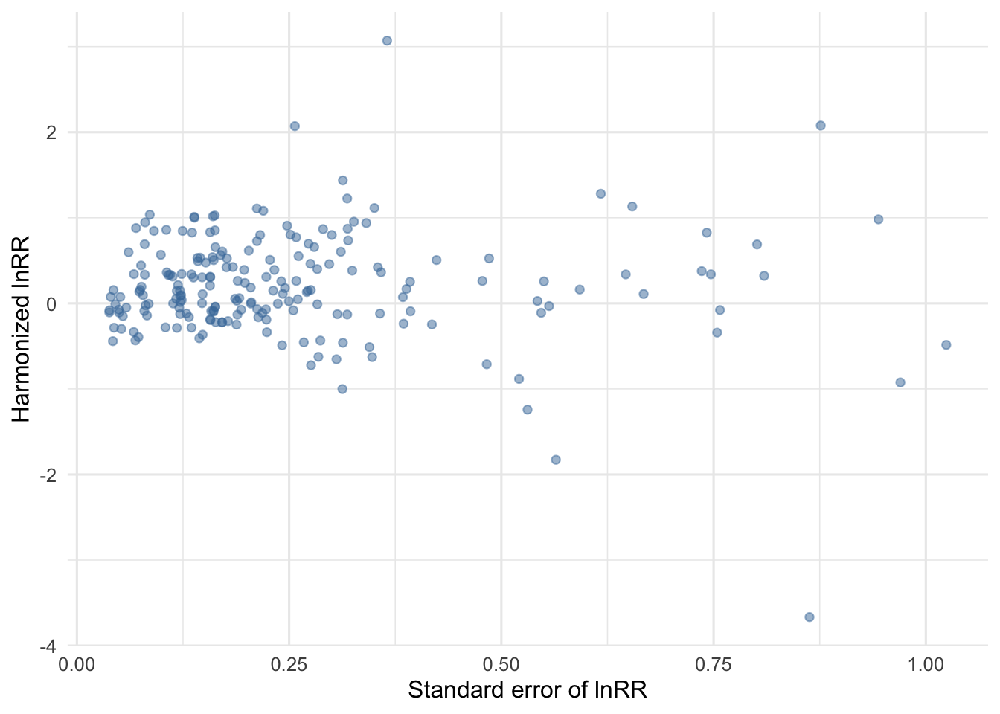

if (!requireNamespace("pacman", quietly = TRUE)) {
stop(
'Package "pacman" is required. Install it once with ',
'install.packages("pacman").'
)
}
analysis_packages <- c("dplyr", "readr", "metafor", "knitr", "ggplot2")
pacman::p_load(char = analysis_packages)
options(dplyr.summarise.inform = FALSE)
knitr::opts_chunk$set(comment = "#>")
project_root <- normalizePath("..", mustWork = TRUE)
derived_dir <- file.path(project_root, "Data", "derived")
db <- readr::read_csv(
file.path(derived_dir, "pcn_data_analysis_ready.csv"),
show_col_types = FALSE
)3 Effect-size calculation: lnRR
3.1 The log response ratio
This project uses the log response ratio (lnRR), the natural logarithm of the ratio of the treatment mean to the control mean (Hedges et al. 1999; Lajeunesse 2015), as agreed in the protocol.
NoteFormula
\[ \ln RR = \ln\left(\frac{M_T}{M_C}\right) + \frac{1}{2}\left(\frac{SD_T^2}{N_T M_T^2} - \frac{SD_C^2}{N_C M_C^2}\right) \]
where \(M_T\), \(SD_T\), \(N_T\) are the mean, standard deviation, and sample size of the noise-exposed group, and \(M_C\), \(SD_C\), \(N_C\) are the same for the control group. This is the bias-corrected estimator implemented by metafor::escalc(measure = "ROM").
NoteA note on the “robust estimator” wording in the protocol
The protocol cites Nakagawa et al. (Nakagawa et al. 2023) for a “robust estimator of lnRR”. That paper (Ecology Letters, 2023) proposes a method specifically for meta-analyses with a substantial share of missing standard deviations, using sample-size-based weighting instead of the usual SD-based sampling variance for the affected rows. In this dataset only 31/207 rows needed a derived SD (Chapter 1), and all 207 have a usable SD after that step, so the standard escalc(measure = "ROM") estimator above is used throughout. If a future update to this dataset has many more missing SDs, revisit this decision and implement the Nakagawa et al. (2023) weighting instead.
Every treatment-control pair in this dataset uses independent animals (confirmed in the protocol deviation review: “the control and exposed animals are distinct for every comparison”), so the same independent-arm formula applies to all 207 effect sizes - there is no paired/dependent-design branch to handle.
Positive lnRR is not yet interpretable on its own: it only means “the exposed-group mean was higher than the control-group mean” for a given outcome, and outcomes are scored in both directions (e.g., more time in the open arms of an elevated-plus maze is less anxiety-like behaviour, while more immobility in a forced-swim test is more depression-like behaviour). The next step harmonizes this so the sign is comparable across outcomes.
3.2 Calculate lnRR and its sampling variance
es <- metafor::escalc(
measure = "ROM",
m1i = ex_mean_final, sd1i = ex_sd_final, n1i = ex_n,
m2i = c_mean_final, sd2i = c_sd_final, n2i = c_n,
data = db
)
es <- es %>%
rename(lnrr_raw = yi, lnrr_var = vi) %>%
mutate(
lnrr_se = sqrt(lnrr_var),
higher_better = trimws(higher_better),
lnrr_harm = ifelse(tolower(higher_better) == "yes", -lnrr_raw, lnrr_raw)
)
if (any(!es$higher_better %in% c("Yes", "No"))) {
stop("higher_better must be exactly 'Yes' or 'No' for every row.")
}
if (any(is.na(es$lnrr_raw) | is.na(es$lnrr_var))) {
stop("escalc produced a missing lnRR or variance; check the input means/SDs/n.")
}
tibble(
effect_sizes = nrow(es),
studies = n_distinct(es$study_id),
flipped_for_direction = sum(tolower(es$higher_better) == "yes")
) %>%
knitr::kable()| effect_sizes | studies | flipped_for_direction |
|---|---|---|
| 207 | 16 | 106 |
lnrr_raw is the estimator applied directly to the exposed vs. control means. lnrr_harm multiplies lnrr_raw by \(-1\) whenever higher_better == "Yes" (a higher raw value on that assay means less anxiety/depression), so that a positive lnrr_harm consistently means more anxiety- or depression-like behaviour under maternal chronic noise exposure, and a negative lnrr_harm means less. lnrr_harm is the value used in every model from Chapter 3 onward; lnrr_raw is kept only for auditing.
3.3 Effect-size table
es %>%
select(
study_id, es_id, outcome_type, assay_type, measurement_variable,
higher_better, ex_mean_final, ex_sd_final, ex_n,
c_mean_final, c_sd_final, c_n,
lnrr_raw, lnrr_harm, lnrr_var, lnrr_se
) %>%
knitr::kable(digits = 3)| study_id | es_id | outcome_type | assay_type | measurement_variable | higher_better | ex_mean_final | ex_sd_final | ex_n | c_mean_final | c_sd_final | c_n | lnrr_raw | lnrr_harm | lnrr_var | lnrr_se |
|---|---|---|---|---|---|---|---|---|---|---|---|---|---|---|---|
| uygur_2010_aphyhun | es001 | Anxiety | Defensive withdrawal test (DWT) | Latency to exit the dark box | No | 137.000 | 200.700 | 9 | 90.900 | 185.594 | 10 | 0.321 | 0.321 | 0.655 | 0.810 |
| uygur_2010_aphyhun | es002 | Anxiety | Defensive withdrawal test (DWT) | Exits from dark box | Yes | 3.670 | 2.190 | 9 | 4.300 | 2.593 | 10 | -0.157 | 0.157 | 0.076 | 0.276 |
| uygur_2010_aphyhun | es003 | Anxiety | Defensive withdrawal test (DWT) | Time in open field | Yes | 66.670 | 50.610 | 9 | 101.740 | 79.848 | 10 | -0.421 | 0.421 | 0.126 | 0.354 |
| barzegar_2014_hippo | es004 | Anxiety | Elevated Plus Maze (EPM) | Entries into open arms (OAE) | Yes | 33.930 | 19.610 | 10 | 32.070 | 10.960 | 10 | 0.067 | -0.067 | 0.045 | 0.212 |
| barzegar_2014_hippo | es005 | Anxiety | Elevated Plus Maze (EPM) | Time in open arms (OAT) | Yes | 30.780 | 4.330 | 10 | 30.020 | 6.410 | 10 | 0.024 | -0.024 | 0.007 | 0.081 |
| barzegar_2014_hippo | es006 | Anxiety | Elevated Plus Maze (EPM) | Entries into open arms (OAE) | Yes | 14.270 | 8.430 | 10 | 32.070 | 10.960 | 10 | -0.798 | 0.798 | 0.047 | 0.216 |
| barzegar_2014_hippo | es007 | Anxiety | Elevated Plus Maze (EPM) | Time in open arms (OAT) | Yes | 21.530 | 5.720 | 10 | 30.020 | 6.410 | 10 | -0.331 | 0.331 | 0.012 | 0.108 |
| barzegar_2014_hippo | es008 | Anxiety | Elevated Plus Maze (EPM) | Entries into open arms (OAE) | Yes | 15.330 | 8.850 | 10 | 32.070 | 10.960 | 10 | -0.727 | 0.727 | 0.045 | 0.212 |
| barzegar_2014_hippo | es009 | Anxiety | Elevated Plus Maze (EPM) | Time in open arms (OAT) | Yes | 16.920 | 8.310 | 10 | 30.020 | 6.410 | 10 | -0.564 | 0.564 | 0.029 | 0.169 |
| hassanvand_2012_phyphar | es010 | Anxiety | Open Field Test (OFT) | Sniffing | Yes | 35.583 | 2.916 | 6 | 41.568 | 2.763 | 6 | -0.155 | 0.155 | 0.002 | 0.043 |
| hassanvand_2012_phyphar | es011 | Anxiety | Open Field Test (OFT) | Rearing frequency | Yes | 20.696 | 2.456 | 6 | 13.943 | 1.842 | 6 | 0.395 | -0.395 | 0.005 | 0.072 |
| hassanvand_2012_phyphar | es012 | Anxiety | Open Field Test (OFT) | Sections crossed | Yes | 28.523 | 2.609 | 6 | 24.686 | 4.451 | 6 | 0.142 | -0.142 | 0.007 | 0.083 |
| arjunan_2023_stress | es013 | Anxiety | Open Field Test (OFT) | Time in central square | Yes | 160.210 | 18.850 | 6 | 225.390 | 25.920 | 6 | -0.341 | 0.341 | 0.005 | 0.067 |
| arjunan_2023_stress | es014 | Anxiety | Open Field Test (OFT) | Time in peripheral square | No | 132.860 | 19.480 | 6 | 71.740 | 28.210 | 6 | 0.605 | 0.605 | 0.029 | 0.171 |
| arjunan_2023_stress | es015 | Anxiety | Open Field Test (OFT) | Time in central square | Yes | 124.080 | 11.780 | 6 | 225.390 | 25.920 | 6 | -0.597 | 0.597 | 0.004 | 0.061 |
| arjunan_2023_stress | es016 | Anxiety | Open Field Test (OFT) | Time in peripheral square | No | 170.480 | 10.750 | 6 | 71.740 | 28.210 | 6 | 0.853 | 0.853 | 0.026 | 0.163 |
| arjunan_2023_stress | es017 | Anxiety | Open Field Test (OFT) | Time in central square | Yes | 93.460 | 11.780 | 6 | 225.390 | 25.920 | 6 | -0.880 | 0.880 | 0.005 | 0.070 |
| arjunan_2023_stress | es018 | Anxiety | Open Field Test (OFT) | Time in peripheral square | No | 202.720 | 12.090 | 6 | 71.740 | 28.210 | 6 | 1.026 | 1.026 | 0.026 | 0.162 |
| hadizadeh_2018_irjbamedsci | es019 | Anxiety | Elevated Plus Maze (EPM) | Entries into open arms (OAE) | Yes | 19.510 | 3.070 | 6 | 54.980 | 7.670 | 6 | -1.036 | 1.036 | 0.007 | 0.086 |
| hadizadeh_2018_irjbamedsci | es020 | Anxiety | Elevated Plus Maze (EPM) | Time in open arms (OAT) | Yes | 17.520 | 4.350 | 6 | 41.560 | 2.900 | 6 | -0.859 | 0.859 | 0.011 | 0.105 |
| abramova_2024_devneur | es021 | Anxiety | Elevated Plus Maze (EPM) | Time in open arms (OAT) | Yes | 27.880 | 17.520 | 49 | 45.560 | 30.700 | 37 | -0.493 | 0.493 | 0.020 | 0.143 |
| abramova_2024_devneur | es022 | Anxiety | Elevated Plus Maze (EPM) | Time in open arms (OAT) | Yes | 38.350 | 24.990 | 44 | 53.820 | 29.510 | 35 | -0.338 | 0.338 | 0.018 | 0.135 |
| abramova_2024_devneur | es023 | Anxiety | Elevated Plus Maze (EPM) | Head-dipping | Yes | 4.460 | 3.090 | 49 | 10.200 | 5.760 | 37 | -0.827 | 0.827 | 0.018 | 0.136 |
| abramova_2024_devneur | es024 | Anxiety | Elevated Plus Maze (EPM) | Head-dipping | Yes | 8.550 | 5.260 | 44 | 11.550 | 6.920 | 35 | -0.302 | 0.302 | 0.019 | 0.137 |
| abramova_2024_devneur | es025 | Anxiety | Elevated Plus Maze (EPM) | Total freezing time | No | 20.840 | 19.550 | 49 | 2.590 | 3.450 | 37 | 2.070 | 2.070 | 0.066 | 0.257 |
| abramova_2024_devneur | es026 | Anxiety | Elevated Plus Maze (EPM) | Total freezing time | No | 3.270 | 3.720 | 44 | 1.230 | 2.020 | 35 | 0.954 | 0.954 | 0.106 | 0.326 |
| abramova_2024_devneur | es027 | Anxiety | Elevated Plus Maze (EPM) | Total grooming time | No | 30.570 | 22.630 | 49 | 22.570 | 14.120 | 37 | 0.304 | 0.304 | 0.022 | 0.148 |
| abramova_2024_devneur | es028 | Anxiety | Elevated Plus Maze (EPM) | Total grooming time | No | 48.400 | 27.760 | 44 | 28.310 | 19.540 | 35 | 0.533 | 0.533 | 0.021 | 0.145 |
| abramova_2024_devneur | es029 | Anxiety | Elevated Plus Maze (EPM) | Mean grooming duration | No | 7.610 | 4.630 | 49 | 6.970 | 3.610 | 37 | 0.088 | 0.088 | 0.015 | 0.122 |
| abramova_2024_devneur | es030 | Anxiety | Elevated Plus Maze (EPM) | Mean grooming duration | No | 12.150 | 7.170 | 44 | 7.130 | 4.670 | 35 | 0.531 | 0.531 | 0.020 | 0.142 |
| abramova_2024_devneur | es031 | Anxiety | Open Field Test (OFT) | Center entries (crossing) | Yes | 2.200 | 1.910 | 49 | 2.460 | 1.210 | 37 | -0.107 | 0.107 | 0.022 | 0.148 |
| abramova_2024_devneur | es032 | Anxiety | Open Field Test (OFT) | Center entries (crossing) | Yes | 1.480 | 1.350 | 44 | 2.870 | 1.490 | 35 | -0.657 | 0.657 | 0.027 | 0.163 |
| abramova_2024_devneur | es033 | Anxiety | Open Field Test (OFT) | Rearing frequency | Yes | 23.440 | 10.990 | 49 | 21.480 | 5.570 | 37 | 0.089 | -0.089 | 0.006 | 0.079 |
| abramova_2024_devneur | es034 | Anxiety | Open Field Test (OFT) | Rearing frequency | Yes | 15.370 | 8.010 | 44 | 21.460 | 9.730 | 35 | -0.334 | 0.334 | 0.012 | 0.110 |
| abramova_2024_devneur | es035 | Anxiety | Open Field Test (OFT) | Sections crossed | Yes | 44.220 | 17.610 | 49 | 50.700 | 14.380 | 37 | -0.136 | 0.136 | 0.005 | 0.074 |
| abramova_2024_devneur | es036 | Anxiety | Open Field Test (OFT) | Sections crossed | Yes | 32.550 | 13.670 | 44 | 45.520 | 13.150 | 35 | -0.335 | 0.335 | 0.006 | 0.080 |
| abramova_2024_devneur | es037 | Anxiety | Open Field Test (OFT) | Total freezing time | No | 31.130 | 30.810 | 49 | 10.510 | 10.740 | 37 | 1.082 | 1.082 | 0.048 | 0.220 |
| abramova_2024_devneur | es038 | Anxiety | Open Field Test (OFT) | Total freezing time | No | 51.690 | 49.020 | 44 | 17.030 | 15.770 | 35 | 1.108 | 1.108 | 0.045 | 0.212 |
| abramova_2024_devneur | es039 | Anxiety | Open Field Test (OFT) | Total grooming time | No | 29.120 | 17.200 | 49 | 25.070 | 13.320 | 37 | 0.149 | 0.149 | 0.015 | 0.121 |
| abramova_2024_devneur | es040 | Anxiety | Open Field Test (OFT) | Total grooming time | No | 40.380 | 25.300 | 44 | 17.340 | 8.330 | 35 | 0.846 | 0.846 | 0.016 | 0.125 |
| abramova_2024_devneur | es041 | Anxiety | Open Field Test (OFT) | Grooming frequency | No | 4.490 | 2.180 | 49 | 3.620 | 2.130 | 37 | 0.213 | 0.213 | 0.014 | 0.119 |
| abramova_2024_devneur | es042 | Anxiety | Open Field Test (OFT) | Grooming frequency | No | 4.460 | 2.780 | 44 | 3.170 | 1.500 | 35 | 0.343 | 0.343 | 0.015 | 0.123 |
| abramova_2024_devneur | es043 | Depression | Forced Swimming Test (FST) | Total immobility time | No | 86.120 | 19.430 | 13 | 49.760 | 27.370 | 14 | 0.540 | 0.540 | 0.026 | 0.160 |
| abramova_2024_devneur | es044 | Depression | Forced Swimming Test (FST) | Total immobility time | No | 128.290 | 46.060 | 14 | 103.970 | 44.650 | 12 | 0.207 | 0.207 | 0.025 | 0.157 |
| abramova_2024_devneur | es045 | Depression | Sucrose Preference Test (SPT) | Sucrose preference index | Yes | 59.800 | 37.800 | 49 | 52.800 | 26.156 | 37 | 0.125 | -0.125 | 0.015 | 0.122 |
| abramova_2024_devneur | es046 | Depression | Sucrose Preference Test (SPT) | Sucrose preference index | Yes | 57.800 | 28.523 | 44 | 54.800 | 30.764 | 35 | 0.052 | -0.052 | 0.015 | 0.121 |
| oliveira_2015_jbehavbraisci | es047 | Anxiety | Elevated T Maze (ETM) | Avoidance latency | No | 6.220 | 14.360 | 12 | 9.330 | 25.130 | 12 | -0.486 | -0.486 | 1.049 | 1.024 |
| oliveira_2015_jbehavbraisci | es048 | Anxiety | Elevated T Maze (ETM) | Avoidance latency | No | 86.530 | 131.030 | 12 | 56.480 | 118.460 | 12 | 0.339 | 0.339 | 0.558 | 0.747 |
| oliveira_2015_jbehavbraisci | es049 | Anxiety | Elevated T Maze (ETM) | Avoidance latency | No | 136.270 | 147.180 | 12 | 103.110 | 129.230 | 12 | 0.262 | 0.262 | 0.228 | 0.478 |
| oliveira_2015_jbehavbraisci | es050 | Anxiety | Elevated T Maze (ETM) | Escape latency | Yes | 6.540 | 8.210 | 12 | 5.340 | 3.860 | 12 | 0.247 | -0.247 | 0.175 | 0.418 |
| oliveira_2015_jbehavbraisci | es051 | Anxiety | Elevated T Maze (ETM) | Escape latency | Yes | 6.600 | 4.060 | 12 | 6.800 | 8.020 | 12 | -0.072 | 0.072 | 0.147 | 0.384 |
| oliveira_2015_jbehavbraisci | es052 | Anxiety | Elevated T Maze (ETM) | Escape latency | Yes | 13.200 | 15.440 | 12 | 6.460 | 7.720 | 12 | 0.712 | -0.712 | 0.233 | 0.483 |
| pavlov_2023_molsci | es053 | Depression | Sucrose Preference Test (SPT) | Sucrose preference index | Yes | 40.480 | 13.490 | 14 | 71.600 | 9.720 | 10 | -0.567 | 0.567 | 0.010 | 0.099 |
| pavlov_2023_molsci | es054 | Anxiety | Open Field Test (OFT) | Sections crossed | Yes | 6.400 | 3.170 | 14 | 10.550 | 6.170 | 10 | -0.508 | 0.508 | 0.052 | 0.227 |
| pavlov_2023_molsci | es055 | Anxiety | Open Field Test (OFT) | Time in central square | Yes | 25.990 | 11.150 | 14 | 71.660 | 17.500 | 10 | -1.011 | 1.011 | 0.019 | 0.138 |
| pavlov_2023_molsci | es056 | Anxiety | Elevated Plus Maze (EPM) | Time in open arms (OAT) | Yes | 25.420 | 9.560 | 14 | 69.170 | 20.840 | 10 | -1.001 | 1.001 | 0.019 | 0.138 |
| pavlov_2023_molsci | es057 | Anxiety | Elevated Plus Maze (EPM) | Entries into open arms (OAE) | Yes | 8.680 | 4.230 | 14 | 13.270 | 5.440 | 10 | -0.424 | 0.424 | 0.034 | 0.184 |
| nishio_2006_intjdevlneur | es058 | Anxiety | Elevated Plus Maze (EPM) | Time in open arms (OAT) | Yes | 24.150 | 7.940 | 5 | 27.160 | 13.810 | 5 | -0.133 | 0.133 | 0.073 | 0.271 |
| nishio_2006_intjdevlneur | es059 | Anxiety | Elevated Plus Maze (EPM) | Time in open arms (OAT) | Yes | 29.230 | 13.810 | 5 | 18.690 | 6.840 | 5 | 0.456 | -0.456 | 0.071 | 0.267 |
| nishio_2006_intjdevlneur | es060 | Anxiety | Elevated Plus Maze (EPM) | Entries into open arms (OAE) | Yes | 46.660 | 7.780 | 5 | 39.610 | 9.640 | 5 | 0.161 | -0.161 | 0.017 | 0.132 |
| nishio_2006_intjdevlneur | es061 | Anxiety | Elevated Plus Maze (EPM) | Entries into open arms (OAE) | Yes | 42.100 | 14.820 | 5 | 33.070 | 7.600 | 5 | 0.249 | -0.249 | 0.035 | 0.188 |
| nishio_2006_intjdevlneur | es062 | Anxiety | Elevated Plus Maze (EPM) | Entries to closed arms | Yes | 3.580 | 1.180 | 5 | 3.970 | 1.710 | 5 | -0.111 | 0.111 | 0.059 | 0.243 |
| nishio_2006_intjdevlneur | es063 | Anxiety | Elevated Plus Maze (EPM) | Entries to closed arms | Yes | 4.550 | 1.150 | 5 | 6.680 | 2.410 | 5 | -0.391 | 0.391 | 0.039 | 0.197 |
| uygur_2011_ankarauniv | es064 | Depression | Forced Swimming Test (FST) | Total immobility time | No | 26.790 | 24.856 | 10 | 45.870 | 24.870 | 9 | -0.511 | -0.511 | 0.119 | 0.345 |
| uygur_2011_ankarauniv | es065 | Depression | Forced Swimming Test (FST) | Total immobility time | No | 48.870 | 40.572 | 10 | 79.050 | 40.560 | 9 | -0.461 | -0.461 | 0.098 | 0.313 |
| uygur_2011_ankarauniv | es066 | Depression | Forced Swimming Test (FST) | Total swimming time | Yes | 39.080 | 18.847 | 10 | 20.090 | 18.840 | 9 | 0.628 | -0.628 | 0.121 | 0.348 |
| uygur_2011_ankarauniv | es067 | Depression | Forced Swimming Test (FST) | Total swimming time | Yes | 33.440 | 39.465 | 10 | 31.890 | 39.450 | 9 | 0.032 | -0.032 | 0.309 | 0.556 |
| uygur_2011_ankarauniv | es068 | Depression | Forced Swimming Test (FST) | Total diving time | Yes | 6.200 | 4.490 | 10 | 5.440 | 4.470 | 9 | 0.119 | -0.119 | 0.127 | 0.357 |
| uygur_2011_ankarauniv | es069 | Depression | Forced Swimming Test (FST) | Total diving time | Yes | 1.700 | 2.846 | 10 | 2.560 | 2.850 | 9 | -0.338 | 0.338 | 0.418 | 0.647 |
| uygur_2011_ankarauniv | es070 | Depression | Forced Swimming Test (FST) | Total jumping time | Yes | 23.000 | 14.673 | 10 | 26.780 | 14.670 | 9 | -0.148 | 0.148 | 0.074 | 0.272 |
| uygur_2011_ankarauniv | es071 | Depression | Forced Swimming Test (FST) | Total jumping time | Yes | 18.400 | 11.795 | 10 | 16.000 | 11.790 | 9 | 0.130 | -0.130 | 0.101 | 0.318 |
| morra_1965_physiolrec | es072 | Anxiety | Open Field Test (OFT) | Sections crossed | Yes | 14.200 | 8.300 | 35 | 19.500 | 8.400 | 63 | -0.314 | 0.314 | 0.013 | 0.113 |
| morra_1965_physiolrec | es073 | Anxiety | Open Field Test (OFT) | Initial latency to move | No | 18.800 | 8.200 | 35 | 13.100 | 7.900 | 63 | 0.361 | 0.361 | 0.011 | 0.106 |
| abramova_2021_front | es074 | Anxiety | Open Field Test (OFT) | Sections crossed | Yes | 24.842 | 12.698 | 19 | 33.739 | 16.896 | 23 | -0.305 | 0.305 | 0.025 | 0.157 |
| abramova_2021_front | es075 | Anxiety | Open Field Test (OFT) | Sections crossed | Yes | 22.167 | 14.573 | 18 | 29.000 | 15.790 | 25 | -0.263 | 0.263 | 0.036 | 0.189 |
| abramova_2021_front | es076 | Anxiety | Open Field Test (OFT) | Rearing frequency | Yes | 6.895 | 4.421 | 19 | 10.130 | 8.756 | 23 | -0.390 | 0.390 | 0.054 | 0.233 |
| abramova_2021_front | es077 | Anxiety | Open Field Test (OFT) | Rearing frequency | Yes | 4.389 | 4.175 | 18 | 8.920 | 6.934 | 25 | -0.696 | 0.696 | 0.074 | 0.273 |
| abramova_2021_front | es078 | Anxiety | Open Field Test (OFT) | Center entries (crossing) | Yes | 1.316 | 2.029 | 19 | 2.261 | 2.527 | 23 | -0.506 | 0.506 | 0.179 | 0.424 |
| abramova_2021_front | es079 | Anxiety | Open Field Test (OFT) | Center entries (crossing) | Yes | 0.889 | 2.324 | 18 | 1.160 | 1.491 | 25 | -0.109 | 0.109 | 0.446 | 0.668 |
| abramova_2021_front | es080 | Anxiety | Open Field Test (OFT) | Time in central square | Yes | 2.937 | 5.119 | 19 | 5.177 | 6.838 | 23 | -0.525 | 0.525 | 0.236 | 0.486 |
| abramova_2021_front | es081 | Anxiety | Open Field Test (OFT) | Time in central square | Yes | 0.774 | 2.192 | 18 | 2.096 | 3.390 | 25 | -0.826 | 0.826 | 0.550 | 0.742 |
| abramova_2021_front | es082 | Anxiety | Open Field Test (OFT) | Grooming frequency | No | 2.789 | 1.782 | 19 | 2.652 | 1.465 | 23 | 0.055 | 0.055 | 0.035 | 0.186 |
| abramova_2021_front | es083 | Anxiety | Open Field Test (OFT) | Grooming frequency | No | 3.000 | 1.749 | 18 | 3.760 | 1.665 | 25 | -0.220 | -0.220 | 0.027 | 0.163 |
| abramova_2021_front | es084 | Anxiety | Open Field Test (OFT) | Total grooming time | No | 28.252 | 24.690 | 19 | 16.379 | 13.134 | 23 | 0.551 | 0.551 | 0.068 | 0.261 |
| abramova_2021_front | es085 | Anxiety | Open Field Test (OFT) | Total grooming time | No | 24.206 | 17.297 | 18 | 34.048 | 25.085 | 25 | -0.338 | -0.338 | 0.050 | 0.224 |
| abramova_2021_front | es086 | Anxiety | Open Field Test (OFT) | Total freezing time | No | 62.359 | 53.848 | 19 | 39.257 | 41.727 | 23 | 0.458 | 0.458 | 0.088 | 0.297 |
| abramova_2021_front | es087 | Anxiety | Open Field Test (OFT) | Total freezing time | No | 79.878 | 55.483 | 18 | 36.678 | 36.638 | 25 | 0.772 | 0.772 | 0.067 | 0.258 |
| badache_2017_stress | es088 | Anxiety | Open Field Test (OFT) | Time in corners | No | 253.780 | 51.890 | 16 | 216.890 | 47.030 | 16 | 0.157 | 0.157 | 0.006 | 0.075 |
| badache_2017_stress | es089 | Anxiety | Open Field Test (OFT) | Sections crossed | Yes | 45.260 | 8.920 | 16 | 70.440 | 16.150 | 16 | -0.443 | 0.443 | 0.006 | 0.076 |
| badache_2017_stress | es090 | Anxiety | Open Field Test (OFT) | Time in central square | Yes | 0.180 | 0.260 | 16 | 4.130 | 0.930 | 16 | -3.069 | 3.069 | 0.134 | 0.365 |
| badache_2017_stress | es091 | Anxiety | Open Field Test (OFT) | Rearing time | Yes | 8.540 | 1.930 | 16 | 22.000 | 5.030 | 16 | -0.946 | 0.946 | 0.006 | 0.080 |
| badache_2017_stress | es092 | Anxiety | Elevated Plus Maze (EPM) | Time in open arms (OAT) | Yes | 67.960 | 14.690 | 16 | 135.510 | 31.840 | 16 | -0.690 | 0.690 | 0.006 | 0.080 |
| badache_2017_stress | es093 | Anxiety | Elevated Plus Maze (EPM) | Rearing time | Yes | 7.770 | 2.050 | 16 | 18.120 | 4.520 | 16 | -0.847 | 0.847 | 0.008 | 0.091 |
| whitlow_1978_thesis | es094 | Anxiety | Open Field Test (OFT) | Sections crossed | Yes | 71.228 | 8.440 | 20 | 65.630 | 8.101 | 20 | 0.082 | -0.082 | 0.001 | 0.038 |
| whitlow_1978_thesis | es095 | Anxiety | Open Field Test (OFT) | Sections crossed | Yes | 60.872 | 7.802 | 20 | 65.630 | 8.101 | 20 | -0.075 | 0.075 | 0.002 | 0.040 |
| whitlow_1978_thesis | es096 | Anxiety | Open Field Test (OFT) | Sections crossed | Yes | 42.800 | 6.542 | 20 | 39.740 | 6.304 | 20 | 0.074 | -0.074 | 0.002 | 0.049 |
| whitlow_1978_thesis | es097 | Anxiety | Open Field Test (OFT) | Sections crossed | Yes | 36.882 | 6.073 | 20 | 39.740 | 6.304 | 20 | -0.075 | 0.075 | 0.003 | 0.051 |
| whitlow_1978_thesis | es098 | Anxiety | Open Field Test (OFT) | Sections crossed | Yes | 26.737 | 5.171 | 20 | 17.330 | 4.163 | 20 | 0.433 | -0.433 | 0.005 | 0.069 |
| whitlow_1978_thesis | es099 | Anxiety | Open Field Test (OFT) | Sections crossed | Yes | 15.746 | 3.968 | 20 | 17.330 | 4.163 | 20 | -0.096 | 0.096 | 0.006 | 0.078 |
| whitlow_1978_thesis | es100 | Anxiety | Open Field Test (OFT) | Grooming frequency | No | 3.681 | 1.919 | 20 | 4.480 | 2.117 | 20 | -0.195 | -0.195 | 0.025 | 0.157 |
| whitlow_1978_thesis | es101 | Anxiety | Open Field Test (OFT) | Grooming frequency | No | 3.708 | 1.926 | 20 | 4.480 | 2.117 | 20 | -0.188 | -0.188 | 0.025 | 0.157 |
| whitlow_1978_thesis | es102 | Anxiety | Open Field Test (OFT) | Grooming frequency | No | 5.670 | 2.381 | 20 | 6.390 | 2.528 | 20 | -0.119 | -0.119 | 0.017 | 0.129 |
| whitlow_1978_thesis | es103 | Anxiety | Open Field Test (OFT) | Grooming frequency | No | 4.802 | 2.191 | 20 | 6.390 | 2.528 | 20 | -0.284 | -0.284 | 0.018 | 0.135 |
| whitlow_1978_thesis | es104 | Anxiety | Open Field Test (OFT) | Grooming frequency | No | 3.690 | 1.921 | 20 | 3.840 | 1.960 | 20 | -0.040 | -0.040 | 0.027 | 0.163 |
| whitlow_1978_thesis | es105 | Anxiety | Open Field Test (OFT) | Grooming frequency | No | 3.075 | 1.754 | 20 | 3.840 | 1.960 | 20 | -0.221 | -0.221 | 0.029 | 0.171 |
| whitlow_1978_thesis | es106 | Anxiety | Open Field Test (OFT) | Defecation amount | No | 2.378 | 1.542 | 20 | 1.740 | 1.319 | 20 | 0.308 | 0.308 | 0.050 | 0.223 |
| whitlow_1978_thesis | es107 | Anxiety | Open Field Test (OFT) | Defecation amount | No | 2.023 | 1.422 | 20 | 1.740 | 1.319 | 20 | 0.148 | 0.148 | 0.053 | 0.231 |
| whitlow_1978_thesis | es108 | Anxiety | Open Field Test (OFT) | Defecation amount | No | 1.983 | 1.408 | 20 | 2.220 | 1.490 | 20 | -0.112 | -0.112 | 0.048 | 0.219 |
| whitlow_1978_thesis | es109 | Anxiety | Open Field Test (OFT) | Defecation amount | No | 1.831 | 1.353 | 20 | 2.220 | 1.490 | 20 | -0.190 | -0.190 | 0.050 | 0.223 |
| whitlow_1978_thesis | es110 | Anxiety | Open Field Test (OFT) | Defecation amount | No | 2.573 | 1.604 | 20 | 1.140 | 1.068 | 20 | 0.802 | 0.802 | 0.063 | 0.252 |
| whitlow_1978_thesis | es111 | Anxiety | Open Field Test (OFT) | Defecation amount | No | 2.860 | 1.691 | 20 | 1.140 | 1.068 | 20 | 0.907 | 0.907 | 0.061 | 0.248 |
| whitlow_1978_thesis | es112 | Anxiety | Open Field Test (OFT) | Sections crossed | Yes | 71.228 | 8.440 | 20 | 45.767 | 6.765 | 20 | 0.442 | -0.442 | 0.002 | 0.042 |
| whitlow_1978_thesis | es113 | Anxiety | Open Field Test (OFT) | Sections crossed | Yes | 60.872 | 7.802 | 20 | 45.767 | 6.765 | 20 | 0.285 | -0.285 | 0.002 | 0.044 |
| whitlow_1978_thesis | es114 | Anxiety | Open Field Test (OFT) | Sections crossed | Yes | 42.800 | 6.542 | 20 | 31.737 | 5.633 | 20 | 0.299 | -0.299 | 0.003 | 0.052 |
| whitlow_1978_thesis | es115 | Anxiety | Open Field Test (OFT) | Sections crossed | Yes | 36.882 | 6.073 | 20 | 31.737 | 5.633 | 20 | 0.150 | -0.150 | 0.003 | 0.054 |
| whitlow_1978_thesis | es116 | Anxiety | Open Field Test (OFT) | Sections crossed | Yes | 26.737 | 5.171 | 20 | 19.120 | 4.373 | 20 | 0.335 | -0.335 | 0.004 | 0.067 |
| whitlow_1978_thesis | es117 | Anxiety | Open Field Test (OFT) | Sections crossed | Yes | 15.746 | 3.968 | 20 | 19.120 | 4.373 | 20 | -0.194 | 0.194 | 0.006 | 0.076 |
| whitlow_1978_thesis | es118 | Anxiety | Open Field Test (OFT) | Grooming frequency | No | 3.681 | 1.919 | 20 | 4.053 | 2.013 | 20 | -0.096 | -0.096 | 0.026 | 0.161 |
| whitlow_1978_thesis | es119 | Anxiety | Open Field Test (OFT) | Grooming frequency | No | 3.708 | 1.926 | 20 | 4.053 | 2.013 | 20 | -0.088 | -0.088 | 0.026 | 0.161 |
| whitlow_1978_thesis | es120 | Anxiety | Open Field Test (OFT) | Grooming frequency | No | 5.670 | 2.381 | 20 | 3.513 | 1.874 | 20 | 0.476 | 0.476 | 0.023 | 0.152 |
| whitlow_1978_thesis | es121 | Anxiety | Open Field Test (OFT) | Grooming frequency | No | 4.802 | 2.191 | 20 | 3.513 | 1.874 | 20 | 0.311 | 0.311 | 0.025 | 0.157 |
| whitlow_1978_thesis | es122 | Anxiety | Open Field Test (OFT) | Grooming frequency | No | 3.690 | 1.921 | 20 | 3.848 | 1.962 | 20 | -0.042 | -0.042 | 0.027 | 0.163 |
| whitlow_1978_thesis | es123 | Anxiety | Open Field Test (OFT) | Grooming frequency | No | 3.075 | 1.754 | 20 | 3.848 | 1.962 | 20 | -0.223 | -0.223 | 0.029 | 0.171 |
| whitlow_1978_thesis | es124 | Anxiety | Open Field Test (OFT) | Defecation amount | No | 2.378 | 1.542 | 20 | 2.385 | 1.544 | 20 | -0.003 | -0.003 | 0.042 | 0.205 |
| whitlow_1978_thesis | es125 | Anxiety | Open Field Test (OFT) | Defecation amount | No | 2.023 | 1.422 | 20 | 2.385 | 1.544 | 20 | -0.163 | -0.163 | 0.046 | 0.214 |
| whitlow_1978_thesis | es126 | Anxiety | Open Field Test (OFT) | Defecation amount | No | 1.983 | 1.408 | 20 | 1.527 | 1.236 | 20 | 0.258 | 0.258 | 0.058 | 0.241 |
| whitlow_1978_thesis | es127 | Anxiety | Open Field Test (OFT) | Defecation amount | No | 1.831 | 1.353 | 20 | 1.527 | 1.236 | 20 | 0.179 | 0.179 | 0.060 | 0.245 |
| whitlow_1978_thesis | es128 | Anxiety | Open Field Test (OFT) | Defecation amount | No | 2.573 | 1.604 | 20 | 2.775 | 1.666 | 20 | -0.075 | -0.075 | 0.037 | 0.194 |
| whitlow_1978_thesis | es129 | Anxiety | Open Field Test (OFT) | Defecation amount | No | 2.860 | 1.691 | 20 | 2.775 | 1.666 | 20 | 0.030 | 0.030 | 0.035 | 0.188 |
| abramova_2020_genpath | es130 | Anxiety | Open Field Test (OFT) | Sections crossed | Yes | 56.263 | 26.461 | 19 | 51.375 | 16.826 | 8 | 0.090 | -0.090 | 0.025 | 0.158 |
| abramova_2020_genpath | es131 | Anxiety | Open Field Test (OFT) | Sections crossed | Yes | 59.625 | 19.442 | 16 | 65.500 | 17.004 | 8 | -0.095 | 0.095 | 0.015 | 0.123 |
| abramova_2020_genpath | es132 | Anxiety | Open Field Test (OFT) | Rearing frequency | Yes | 23.579 | 11.057 | 19 | 23.625 | 6.739 | 8 | -0.001 | 0.001 | 0.022 | 0.147 |
| abramova_2020_genpath | es133 | Anxiety | Open Field Test (OFT) | Rearing frequency | Yes | 28.188 | 8.909 | 16 | 28.125 | 6.468 | 8 | 0.002 | -0.002 | 0.013 | 0.113 |
| abramova_2020_genpath | es134 | Anxiety | Open Field Test (OFT) | Center entries (crossing) | Yes | 1.842 | 1.425 | 19 | 1.875 | 2.997 | 8 | -0.162 | 0.162 | 0.351 | 0.592 |
| abramova_2020_genpath | es135 | Anxiety | Open Field Test (OFT) | Center entries (crossing) | Yes | 1.250 | 0.931 | 16 | 2.750 | 1.832 | 8 | -0.799 | 0.799 | 0.090 | 0.300 |
| abramova_2020_genpath | es136 | Anxiety | Open Field Test (OFT) | Total grooming time | No | 33.240 | 19.972 | 19 | 12.504 | 11.026 | 8 | 0.939 | 0.939 | 0.116 | 0.341 |
| abramova_2020_genpath | es137 | Anxiety | Open Field Test (OFT) | Total grooming time | No | 17.125 | 12.296 | 16 | 13.871 | 13.505 | 8 | 0.168 | 0.168 | 0.151 | 0.388 |
| abramova_2020_genpath | es138 | Anxiety | Open Field Test (OFT) | Total freezing time | No | 33.232 | 43.781 | 19 | 9.477 | 15.553 | 8 | 1.132 | 1.132 | 0.428 | 0.654 |
| abramova_2020_genpath | es139 | Anxiety | Open Field Test (OFT) | Total freezing time | No | 32.792 | 28.650 | 16 | 8.256 | 21.451 | 8 | 0.981 | 0.981 | 0.892 | 0.944 |
| abramova_2020_genpath | es140 | Anxiety | Open Field Test (OFT) | Grooming frequency | No | 4.210 | 2.175 | 19 | 4.625 | 3.701 | 8 | -0.127 | -0.127 | 0.094 | 0.307 |
| abramova_2020_genpath | es141 | Anxiety | Open Field Test (OFT) | Grooming frequency | No | 3.000 | 1.366 | 16 | 2.875 | 1.808 | 8 | 0.024 | 0.024 | 0.062 | 0.250 |
| abramova_2020_genpath | es142 | Anxiety | Elevated Plus Maze (EPM) | Total time in dark | No | 253.711 | 39.468 | 19 | 282.218 | 17.087 | 20 | -0.106 | -0.106 | 0.001 | 0.038 |
| abramova_2020_genpath | es143 | Anxiety | Elevated Plus Maze (EPM) | Total time in dark | No | 242.441 | 43.874 | 16 | 270.448 | 23.599 | 18 | -0.109 | -0.109 | 0.002 | 0.050 |
| abramova_2020_genpath | es144 | Anxiety | Elevated Plus Maze (EPM) | Total time in light | Yes | 42.784 | 38.847 | 19 | 15.626 | 16.300 | 20 | 1.002 | -1.002 | 0.098 | 0.313 |
| abramova_2020_genpath | es145 | Anxiety | Elevated Plus Maze (EPM) | Total time in light | Yes | 49.963 | 41.842 | 16 | 26.831 | 21.928 | 18 | 0.625 | -0.625 | 0.081 | 0.285 |
| abramova_2020_genpath | es146 | Anxiety | Elevated Plus Maze (EPM) | Center entries (crossing) | Yes | 3.789 | 3.137 | 19 | 1.950 | 2.089 | 20 | 0.654 | -0.654 | 0.093 | 0.306 |
| abramova_2020_genpath | es147 | Anxiety | Elevated Plus Maze (EPM) | Center entries (crossing) | Yes | 4.688 | 3.240 | 16 | 4.389 | 2.615 | 18 | 0.071 | -0.071 | 0.050 | 0.223 |
| abramova_2020_genpath | es148 | Anxiety | Elevated Plus Maze (EPM) | Head-out inspections | No | 3.053 | 2.198 | 19 | 2.900 | 1.252 | 20 | 0.060 | 0.060 | 0.037 | 0.191 |
| abramova_2020_genpath | es149 | Anxiety | Elevated Plus Maze (EPM) | Head-out inspections | No | 3.250 | 1.915 | 16 | 3.722 | 1.873 | 18 | -0.132 | -0.132 | 0.036 | 0.189 |
| abramova_2020_genpath | es150 | Anxiety | Elevated Plus Maze (EPM) | Overhangs | No | 7.105 | 5.415 | 19 | 2.950 | 3.052 | 20 | 0.868 | 0.868 | 0.084 | 0.290 |
| abramova_2020_genpath | es151 | Anxiety | Elevated Plus Maze (EPM) | Overhangs | No | 8.625 | 6.859 | 16 | 5.778 | 4.941 | 18 | 0.400 | 0.400 | 0.080 | 0.283 |
| abramova_2020_genpath | es152 | Anxiety | Elevated Plus Maze (EPM) | Total grooming time | No | 22.875 | 20.760 | 19 | 47.411 | 38.345 | 20 | -0.723 | -0.723 | 0.076 | 0.276 |
| abramova_2020_genpath | es153 | Anxiety | Elevated Plus Maze (EPM) | Total grooming time | No | 30.549 | 22.072 | 16 | 46.784 | 44.214 | 18 | -0.435 | -0.435 | 0.082 | 0.287 |
| abramova_2020_genpath | es154 | Anxiety | Elevated Plus Maze (EPM) | Rearing frequency | Yes | 12.421 | 5.368 | 19 | 8.250 | 3.864 | 20 | 0.409 | -0.409 | 0.021 | 0.144 |
| abramova_2020_genpath | es155 | Anxiety | Elevated Plus Maze (EPM) | Rearing frequency | Yes | 16.938 | 6.678 | 16 | 11.722 | 5.497 | 18 | 0.367 | -0.367 | 0.022 | 0.148 |
| abramova_2020_genpath | es156 | Anxiety | Elevated Plus Maze (EPM) | Total freezing time | No | 6.527 | 11.285 | 19 | 22.984 | 36.261 | 20 | -1.242 | -1.242 | 0.282 | 0.531 |
| abramova_2020_genpath | es157 | Anxiety | Elevated Plus Maze (EPM) | Total freezing time | No | 11.834 | 18.412 | 16 | 11.178 | 30.827 | 18 | -0.079 | -0.079 | 0.574 | 0.757 |
| abramova_2020_genpath | es158 | Anxiety | Elevated Plus Maze (EPM) | Grooming frequency | No | 3.842 | 2.522 | 19 | 3.800 | 2.375 | 20 | 0.013 | 0.013 | 0.042 | 0.205 |
| abramova_2020_genpath | es159 | Anxiety | Elevated Plus Maze (EPM) | Grooming frequency | No | 3.562 | 1.861 | 16 | 4.389 | 2.253 | 18 | -0.207 | -0.207 | 0.032 | 0.178 |
| abramova_2020_genpath | es160 | Depression | Forced Swimming Test (FST) | Total immobility time | No | 186.377 | 71.394 | 19 | 247.536 | 63.835 | 21 | -0.282 | -0.282 | 0.011 | 0.104 |
| abramova_2020_genpath | es161 | Depression | Forced Swimming Test (FST) | Total immobility time | No | 207.164 | 75.821 | 16 | 179.330 | 56.276 | 18 | 0.146 | 0.146 | 0.014 | 0.118 |
| abramova_2020_genpath | es162 | Depression | Sucrose Preference Test (SPT) | Sucrose preference index | Yes | 58.418 | 28.936 | 19 | 52.773 | 34.069 | 8 | 0.082 | -0.082 | 0.065 | 0.255 |
| abramova_2020_genpath | es163 | Depression | Sucrose Preference Test (SPT) | Sucrose preference index | Yes | 49.819 | 33.964 | 16 | 63.830 | 26.437 | 17 | -0.238 | 0.238 | 0.039 | 0.198 |
| abramova_2023_biopsy | es164 | Anxiety | Open Field Test (OFT) | Sections crossed | Yes | 22.300 | 10.435 | 10 | 51.700 | 8.100 | 9 | -0.831 | 0.831 | 0.025 | 0.157 |
| abramova_2023_biopsy | es165 | Anxiety | Open Field Test (OFT) | Sections crossed | Yes | 31.100 | 14.425 | 8 | 53.200 | 11.068 | 10 | -0.526 | 0.526 | 0.031 | 0.177 |
| abramova_2023_biopsy | es166 | Anxiety | Open Field Test (OFT) | Rearing frequency | Yes | 8.400 | 3.795 | 10 | 23.400 | 5.100 | 9 | -1.017 | 1.017 | 0.026 | 0.160 |
| abramova_2023_biopsy | es167 | Anxiety | Open Field Test (OFT) | Rearing frequency | Yes | 14.100 | 4.808 | 8 | 23.400 | 7.906 | 10 | -0.505 | 0.505 | 0.026 | 0.161 |
| abramova_2023_biopsy | es168 | Anxiety | Open Field Test (OFT) | Center entries (crossing) | Yes | 0.500 | 0.860 | 10 | 2.000 | 1.749 | 9 | -1.281 | 1.281 | 0.381 | 0.617 |
| abramova_2023_biopsy | es169 | Anxiety | Open Field Test (OFT) | Center entries (crossing) | Yes | 0.187 | 0.447 | 8 | 2.074 | 1.548 | 10 | -2.077 | 2.077 | 0.768 | 0.876 |
| abramova_2023_biopsy | es170 | Anxiety | Open Field Test (OFT) | Total freezing time | No | 80.100 | 61.348 | 10 | 23.700 | 14.700 | 9 | 1.226 | 1.226 | 0.101 | 0.318 |
| abramova_2023_biopsy | es171 | Anxiety | Open Field Test (OFT) | Total freezing time | No | 75.300 | 56.851 | 8 | 18.300 | 9.487 | 10 | 1.437 | 1.437 | 0.098 | 0.313 |
| abramova_2023_biopsy | es172 | Anxiety | Open Field Test (OFT) | Total grooming time | No | 39.763 | 31.476 | 10 | 16.820 | 9.971 | 9 | 0.872 | 0.872 | 0.102 | 0.319 |
| abramova_2023_biopsy | es173 | Anxiety | Open Field Test (OFT) | Total grooming time | No | 25.011 | 19.389 | 8 | 26.215 | 5.934 | 10 | -0.012 | -0.012 | 0.080 | 0.283 |
| abramova_2023_biopsy | es174 | Anxiety | Open Field Test (OFT) | Grooming frequency | No | 3.300 | 1.581 | 10 | 3.300 | 1.800 | 9 | -0.005 | -0.005 | 0.056 | 0.237 |
| abramova_2023_biopsy | es175 | Anxiety | Open Field Test (OFT) | Grooming frequency | No | 2.900 | 1.697 | 8 | 4.800 | 1.897 | 10 | -0.490 | -0.490 | 0.058 | 0.242 |
| abramova_2023_biopsy | es176 | Anxiety | Open Field Test (OFT) | Mean grooming duration | No | 0.637 | 1.118 | 10 | 4.600 | 1.399 | 9 | -1.828 | -1.828 | 0.318 | 0.564 |
| abramova_2023_biopsy | es177 | Anxiety | Open Field Test (OFT) | Mean grooming duration | No | 0.112 | 0.268 | 8 | 6.167 | 3.526 | 10 | -3.666 | -3.666 | 0.745 | 0.863 |
| abramova_2023_biopsy | es178 | Anxiety | Elevated Plus Maze (EPM) | Total time in dark | No | 251.000 | 41.110 | 10 | 264.000 | 21.000 | 9 | -0.050 | -0.050 | 0.003 | 0.058 |
| abramova_2023_biopsy | es179 | Anxiety | Elevated Plus Maze (EPM) | Total time in dark | No | 266.000 | 31.113 | 8 | 269.000 | 15.811 | 10 | -0.011 | -0.011 | 0.002 | 0.045 |
| abramova_2023_biopsy | es180 | Anxiety | Elevated Plus Maze (EPM) | Total time in light | Yes | 34.658 | 51.428 | 10 | 33.307 | 28.077 | 9 | 0.110 | -0.110 | 0.299 | 0.547 |
| abramova_2023_biopsy | es181 | Anxiety | Elevated Plus Maze (EPM) | Total time in light | Yes | 33.101 | 28.682 | 8 | 26.620 | 19.608 | 10 | 0.238 | -0.238 | 0.148 | 0.385 |
| abramova_2023_biopsy | es182 | Anxiety | Elevated Plus Maze (EPM) | Center entries (crossing) | Yes | 2.900 | 2.530 | 10 | 6.200 | 3.000 | 9 | -0.735 | 0.735 | 0.102 | 0.320 |
| abramova_2023_biopsy | es183 | Anxiety | Elevated Plus Maze (EPM) | Center entries (crossing) | Yes | 2.900 | 1.980 | 8 | 4.700 | 1.961 | 10 | -0.462 | 0.462 | 0.076 | 0.275 |
| abramova_2023_biopsy | es184 | Anxiety | Elevated Plus Maze (EPM) | Head-out inspections | No | 0.259 | 0.602 | 10 | 0.233 | 0.000 | 9 | 0.376 | 0.376 | 0.542 | 0.736 |
| abramova_2023_biopsy | es185 | Anxiety | Elevated Plus Maze (EPM) | Head-out inspections | No | 0.626 | 0.894 | 8 | 1.704 | 0.688 | 10 | -0.883 | -0.883 | 0.271 | 0.521 |
| abramova_2023_biopsy | es186 | Anxiety | Elevated Plus Maze (EPM) | Overhangs | No | 9.800 | 7.273 | 10 | 6.700 | 4.500 | 9 | 0.383 | 0.383 | 0.105 | 0.324 |
| abramova_2023_biopsy | es187 | Anxiety | Elevated Plus Maze (EPM) | Overhangs | No | 8.100 | 4.808 | 8 | 7.800 | 3.795 | 10 | 0.048 | 0.048 | 0.068 | 0.260 |
| abramova_2023_biopsy | es188 | Anxiety | Elevated Plus Maze (EPM) | Rearing frequency | Yes | 8.000 | 4.111 | 10 | 14.900 | 5.400 | 9 | -0.616 | 0.616 | 0.041 | 0.202 |
| abramova_2023_biopsy | es189 | Anxiety | Elevated Plus Maze (EPM) | Rearing frequency | Yes | 15.200 | 3.960 | 8 | 15.800 | 4.111 | 10 | -0.038 | 0.038 | 0.015 | 0.124 |
| abramova_2023_biopsy | es190 | Anxiety | Elevated Plus Maze (EPM) | Total freezing time | No | 1.137 | 1.978 | 10 | 1.023 | 0.000 | 9 | 0.257 | 0.257 | 0.303 | 0.550 |
| abramova_2023_biopsy | es191 | Anxiety | Elevated Plus Maze (EPM) | Total freezing time | No | 10.894 | 16.441 | 8 | 5.278 | 9.976 | 10 | 0.688 | 0.688 | 0.642 | 0.801 |
| abramova_2023_biopsy | es192 | Anxiety | Elevated Plus Maze (EPM) | Total grooming time | No | 46.800 | 20.871 | 10 | 24.900 | 20.700 | 9 | 0.603 | 0.603 | 0.097 | 0.311 |
| abramova_2023_biopsy | es193 | Anxiety | Elevated Plus Maze (EPM) | Total grooming time | No | 29.700 | 28.567 | 8 | 24.000 | 14.863 | 10 | 0.252 | 0.252 | 0.154 | 0.392 |
| abramova_2023_biopsy | es194 | Anxiety | Elevated Plus Maze (EPM) | Grooming frequency | No | 2.628 | 2.838 | 10 | 3.000 | 1.749 | 9 | -0.093 | -0.093 | 0.154 | 0.393 |
| abramova_2023_biopsy | es195 | Anxiety | Elevated Plus Maze (EPM) | Grooming frequency | No | 3.024 | 4.468 | 8 | 3.335 | 1.548 | 10 | 0.028 | 0.028 | 0.294 | 0.543 |
| abramova_2023_biopsy | es196 | Anxiety | Elevated Plus Maze (EPM) | Mean grooming duration | No | 20.900 | 15.179 | 10 | 6.800 | 5.400 | 9 | 1.114 | 1.114 | 0.123 | 0.350 |
| abramova_2023_biopsy | es197 | Anxiety | Elevated Plus Maze (EPM) | Mean grooming duration | No | 8.800 | 8.202 | 8 | 6.400 | 2.846 | 10 | 0.363 | 0.363 | 0.128 | 0.358 |
| abramova_2023_biopsy | es198 | Depression | Sucrose Preference Test (SPT) | Sucrose preference index | Yes | 60.300 | 13.914 | 10 | 63.500 | 17.400 | 9 | -0.053 | 0.053 | 0.014 | 0.117 |
| abramova_2023_biopsy | es199 | Depression | Sucrose Preference Test (SPT) | Sucrose preference index | Yes | 83.400 | 11.314 | 8 | 62.300 | 21.187 | 10 | 0.287 | -0.287 | 0.014 | 0.118 |
| abramova_2023_biopsy | es200 | Depression | Forced Swimming Test (FST) | Total immobility time | No | 134.827 | 53.320 | 10 | 111.487 | 54.230 | 9 | 0.185 | 0.185 | 0.042 | 0.205 |
| abramova_2023_biopsy | es201 | Depression | Forced Swimming Test (FST) | Total immobility time | No | 98.502 | 19.657 | 8 | 64.000 | 32.680 | 10 | 0.421 | 0.421 | 0.031 | 0.176 |
| abramova_2023_biopsy | es202 | Depression | Forced Swimming Test (FST) | Total passive swimming | No | 201.000 | 34.785 | 10 | 202.000 | 39.000 | 9 | -0.006 | -0.006 | 0.007 | 0.084 |
| abramova_2023_biopsy | es203 | Depression | Forced Swimming Test (FST) | Total passive swimming | No | 228.000 | 22.627 | 8 | 223.000 | 82.219 | 10 | 0.016 | 0.016 | 0.015 | 0.122 |
| abramova_2023_biopsy | es204 | Depression | Forced Swimming Test (FST) | Total active swimming | Yes | 22.000 | 15.811 | 10 | 43.000 | 21.000 | 9 | -0.658 | 0.658 | 0.078 | 0.280 |
| abramova_2023_biopsy | es205 | Depression | Forced Swimming Test (FST) | Total active swimming | Yes | 36.000 | 19.799 | 8 | 47.000 | 25.298 | 10 | -0.262 | 0.262 | 0.067 | 0.258 |
| abramova_2023_biopsy | es206 | Depression | Forced Swimming Test (FST) | Number of dives | Yes | 2.889 | 3.182 | 10 | 1.743 | 3.499 | 9 | 0.342 | -0.342 | 0.569 | 0.754 |
| abramova_2023_biopsy | es207 | Depression | Forced Swimming Test (FST) | Number of dives | Yes | 1.000 | 1.787 | 8 | 0.370 | 0.860 | 10 | 0.924 | -0.924 | 0.941 | 0.970 |
3.4 Distribution of effect sizes
ggplot(es, aes(x = lnrr_harm)) +
geom_histogram(bins = 30, fill = "#477AA8", color = "white") +
geom_vline(xintercept = 0, linetype = "dashed", color = "#B24745") +
labs(x = "Harmonized lnRR", y = "Number of effect sizes") +
theme_minimal(base_size = 12)
ggplot(es, aes(x = lnrr_se, y = lnrr_harm)) +
geom_point(alpha = 0.5, color = "#477AA8") +
labs(x = "Standard error of lnRR", y = "Harmonized lnRR") +
theme_minimal(base_size = 12)
3.5 Export
readr::write_csv(es, file.path(derived_dir, "db_effect_sizes.csv"), na = "")
tibble(output = "Data/derived/db_effect_sizes.csv") %>% knitr::kable()| output |
|---|
| Data/derived/db_effect_sizes.csv |
3.6 Session information
sessionInfo()#> R version 4.5.1 (2025-06-13)
#> Platform: aarch64-apple-darwin20
#> Running under: macOS Tahoe 26.6.1
#>
#> Matrix products: default
#> BLAS: /Library/Frameworks/R.framework/Versions/4.5-arm64/Resources/lib/libRblas.0.dylib
#> LAPACK: /Library/Frameworks/R.framework/Versions/4.5-arm64/Resources/lib/libRlapack.dylib; LAPACK version 3.12.1
#>
#> locale:
#> [1] en_US.UTF-8/en_US.UTF-8/en_US.UTF-8/C/en_US.UTF-8/en_US.UTF-8
#>
#> time zone: America/Edmonton
#> tzcode source: internal
#>
#> attached base packages:
#> [1] stats graphics grDevices utils datasets methods base
#>
#> other attached packages:
#> [1] ggplot2_4.0.3 knitr_1.51 metafor_5.0-1
#> [4] numDeriv_2016.8-1.1 metadat_1.6-0 Matrix_1.7-3
#> [7] readr_2.2.0 dplyr_1.2.1
#>
#> loaded via a namespace (and not attached):
#> [1] bit_4.6.0 gtable_0.3.6 jsonlite_2.0.0 crayon_1.5.3
#> [5] compiler_4.5.1 tidyselect_1.2.1 parallel_4.5.1 scales_1.4.0
#> [9] yaml_2.3.12 fastmap_1.2.0 lattice_0.22-7 R6_2.6.1
#> [13] labeling_0.4.3 generics_0.1.4 htmlwidgets_1.6.4 tibble_3.3.1
#> [17] RColorBrewer_1.1-3 pillar_1.11.1 tzdb_0.5.0 rlang_1.3.0
#> [21] mathjaxr_2.0-0 xfun_0.60 S7_0.2.2 bit64_4.8.2
#> [25] otel_0.2.0 cli_3.6.6 withr_3.0.3 magrittr_2.0.5
#> [29] digest_0.6.39 grid_4.5.1 vroom_1.7.1 hms_1.1.4
#> [33] lifecycle_1.0.5 nlme_3.1-168 vctrs_0.7.3 evaluate_1.0.5
#> [37] glue_1.8.1 farver_2.1.2 pacman_0.5.1 rmarkdown_2.31
#> [41] tools_4.5.1 pkgconfig_2.0.3 htmltools_0.5.9
Hedges, Larry V., Jessica Gurevitch, and Peter S. Curtis. 1999. “The Meta-Analysis of Response Ratios in Experimental Ecology.” Ecology 80 (4): 1150–56. https://doi.org/10.2307/177062.
Lajeunesse, Marc J. 2015. “Bias and Correction for the Log Response Ratio in Ecological Meta-Analysis.” Ecology 96 (8): 2056–63. https://doi.org/10.1890/14-2402.1.
Nakagawa, Shinichi, Daniel W. A. Noble, Malgorzata Lagisz, Rebecca Spake, Wolfgang Viechtbauer, and Alistair M. Senior. 2023. “A Robust and Readily Implementable Method for the Meta-Analysis of Response Ratios with and Without Missing Standard Deviations.” Ecology Letters 26 (2): 232–44. https://doi.org/10.1111/ele.14144.